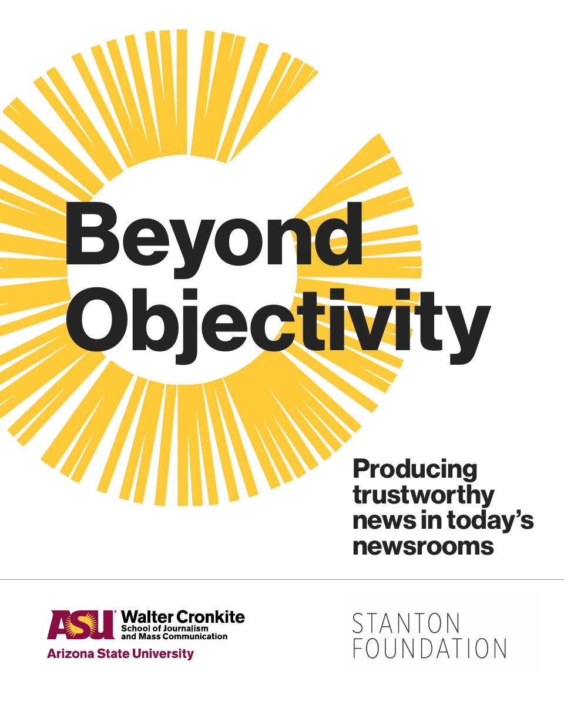
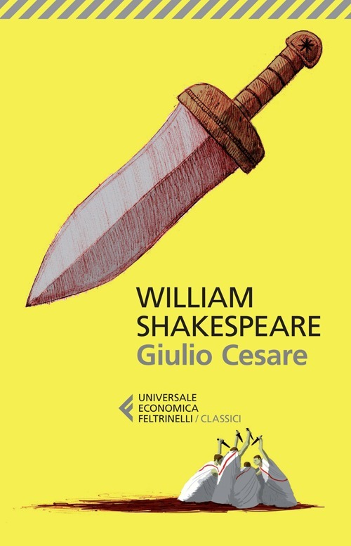

51:08 · 5 OPERE
Far rullare i tamburi della follia.
Il filo del discorso
Il contributo affronta la credibilità dell’informazione a partire da una distinzione: il valore di un argomento va discusso nel merito, senza ridurlo alla piattaforma che lo ospita o alle credenziali di chi parla. Il relatore collega questo tema alla formazione culturale, all’autorità politica e alla possibilità di condividere criteri di giudizio. Una digressione sulla corte di Luigi XIV precede il nucleo centrale, dedicato a una polemica giornalistica americana: un articolo di Bret Stephens e il rapporto Beyond Objectivity di Leonard Downie Jr. e Andrew Heyward. Il relatore interpreta l’abbandono della parola oggettività come una rinuncia alla ragione e insiste sul rischio che l’identità del giornalista sostituisca la verifica dei fatti. La scheda distingue questa lettura dalla proposta effettiva del rapporto, che resta legata all’accuratezza, e segnala che i diversi interlocutori non usano sempre oggettività nello stesso senso. Cronkite, Shakespeare e Orwell diventano passaggi di una riflessione sul rapporto fra linguaggio, realtà e potere. Gli esempi finali del bastone nell’acqua e dei modelli scientifici riportano il discorso alla conoscenza: una rappresentazione può essere parziale senza che ogni descrizione del mondo sia equivalente. Le accuse di manipolazione restano attribuite e le citazioni non localizzate sono dichiarate.
I libri nel discorso

I vestiti nuovi dell’imperatore
Copertina: Rizzoli, 2014 · eBook di riferimento
Allusione al bambino che vede la nudità del sovrano, nella fiaba di Andersen.
Passaggio 4:10 ↗ · Fonti e libro ↗
Beyond Objectivity: Producing Trustworthy News in Today’s Newsrooms
Copertina originale del rapporto: Walter Cronkite School of Journalism and Mass Communication, Arizona State University, gennaio 2023, con sostegno della Stanton Foundation. PDF originale di 54 pagine; copertina autentica estratta dalla prima pagina, non quella del separato One-Page Playbook.
Rapporto istituzionale distinto da un libro commerciale e dal foglio operativo di una pagina; autori verificati a pagina2 del PDF.
Beyond Objectivity nominato con i due autori e la Cronkite School; nomi e istituzione riscontrati nel rapporto.
Passaggio 24:40 ↗ · Fonti e libro ↗
Giulio Cesare
Identificazione probabile
Copertina: Feltrinelli · Universale Economica I Classici · 2013
Copertina autentica dell’edizione di riferimento, non attribuita all’esemplare del video.
Allusione riconoscibile al discorso di Antonio, atto III scena2: la ragione fuggita fra le bestie.
Passaggio 34:54 ↗ · Fonti e libro ↗
1984
Copertina: Newton Compton · edizione illustrativa
1984 e Orwell espliciti nel confronto con il programma televisivo.
Passaggio 42:53 ↗ · Fonti e libro ↗
Orlando furioso
Identificazione probabile
Copertina: Feltrinelli · Universale Economica Classici · 2016 · edizione in due volumi
Copertina editoriale di riferimento per l’edizione in due volumi indivisibili; l’immagine non mostra entrambi i volumi e non identifica un esemplare del video.
Astolfo sulla Luna alla ricerca del senno: allusione riconoscibile al poema, senza edizione indicata.
Passaggio 49:51 ↗ · Fonti e libro ↗